24-677 Modern Control Theory, Carnegie Mellon University, Fall 2025
Control and Estimation for Autonomous Vehicles
I derived a car’s dynamics by hand and wrote its controllers in Python for a simulated Tesla Model 3 on a CMU-themed course in Webots, then moved to a DJI Mavic 2 Pro quadrotor: PID and LQR tracking, A* re-planning to overtake another car, EKF SLAM, and model reference adaptive control (MRAC) that keeps the drone flying when a motor loses thrust.
- 100/100 on the course autograder with the car steering on its own EKF SLAM estimates, 0.44 m from the path on average
- 99.2/100 with discrete-time LQR steering
- 65% thrust lost in one motor that my adaptive controller still flew through; LQR alone crashed at 50%
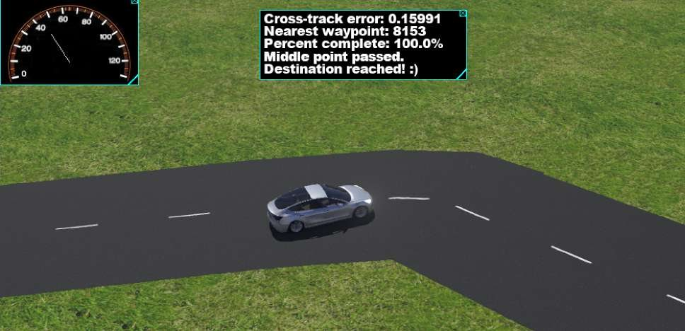
What I did
- Derived the linearized lateral and longitudinal state-space models of the car by hand.
- Tuned PID steering and speed control, then designed discrete-time infinite-horizon LQR steering.
- Implemented A* on an occupancy grid of the road to re-plan around a slower car and overtake it.
- Derived the EKF SLAM Jacobians and implemented EKF SLAM that estimates the car’s pose and the map features from range and bearing.
- Layered MRAC on an LQR baseline so the quadrotor keeps tracking altitude after a motor loses thrust, and found where it fails.
A hand-derived model and a PID lap
I linearized the car’s bicycle model into a lateral system (lateral position and velocity, heading, and yaw rate, driven by the steering angle) and a longitudinal one (driven by the throttle force), using the course’s vehicle parameters. On that model I tuned PID controllers for steering and speed. The car finished the course in about 123 s, well inside the 400 s limit.
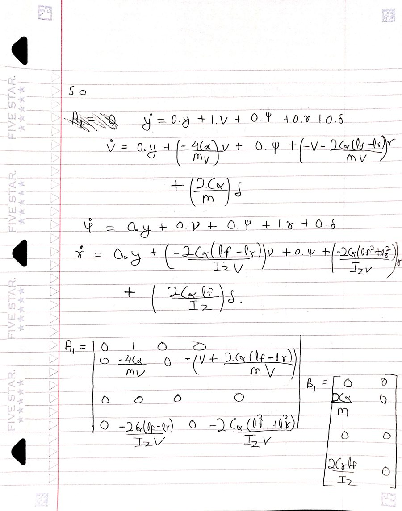
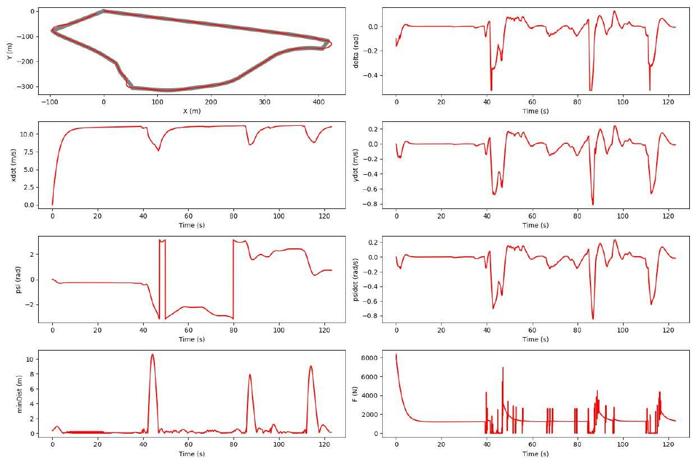
LQR steering
Next I replaced PID steering with a discrete-time infinite-horizon LQR controller, keeping a PID loop on speed. It scored 99.2/100 on the course autograder, staying 0.67 m from the path on average.
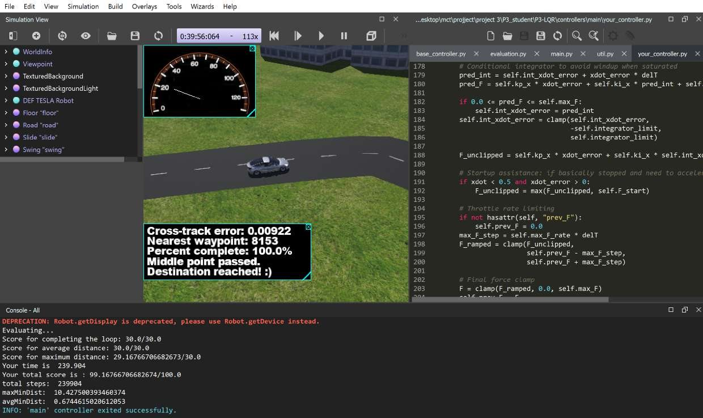
A* re-planning to overtake
Then a second car joins the track. When my car closes in on it, A* re-plans over an occupancy grid of the road ahead, with the other car’s predicted path and the road edges marked as obstacles, and the LQR controller follows the new path. My car passed the other car and finished the lap, though it weaved along the straight while following the grid path, up to about 8 m from the reference.
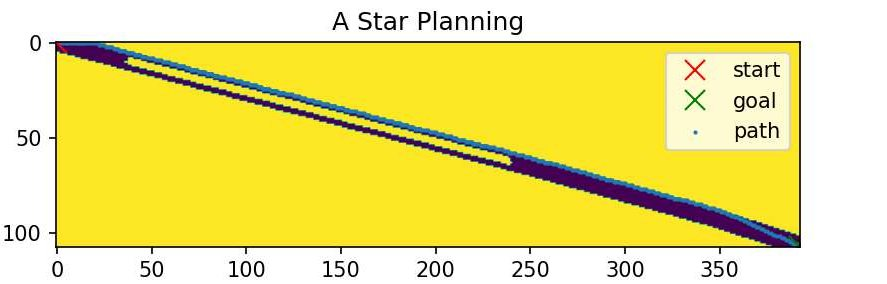
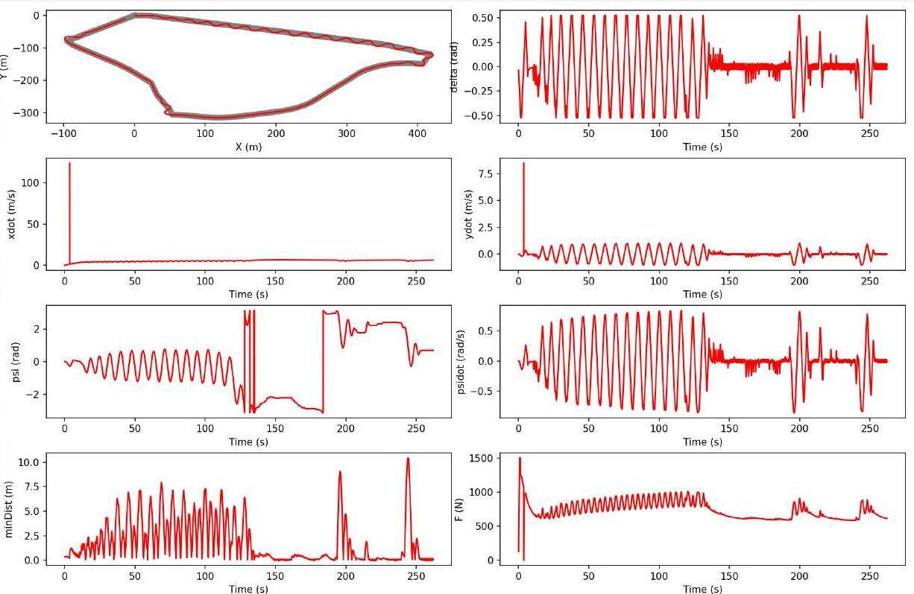
EKF SLAM
For EKF SLAM the car no longer gets its position for free. I derived the motion and measurement Jacobians by hand and implemented an extended Kalman filter that estimates the car’s position and heading together with the positions of the map features, from range and bearing measurements to each. In an offline test the estimate stayed on top of the true pose. In Webots, with LQR steering on the SLAM estimate, the car scored 100/100: a 136 s lap, 0.44 m from the path on average.
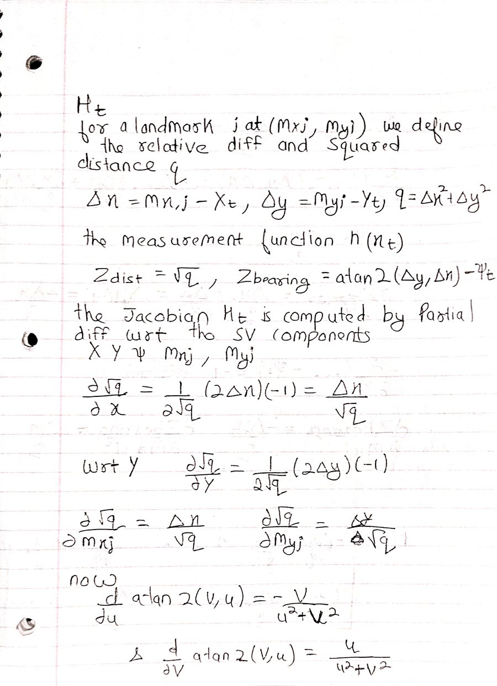
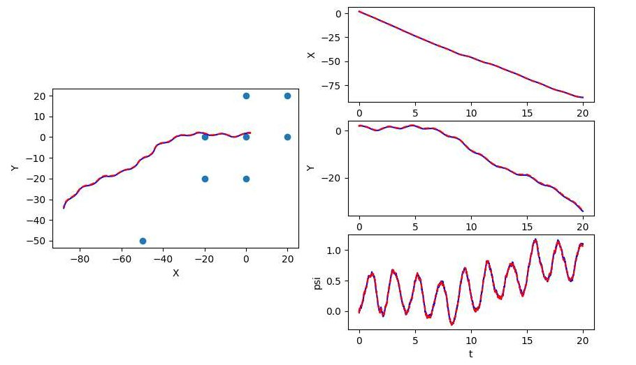
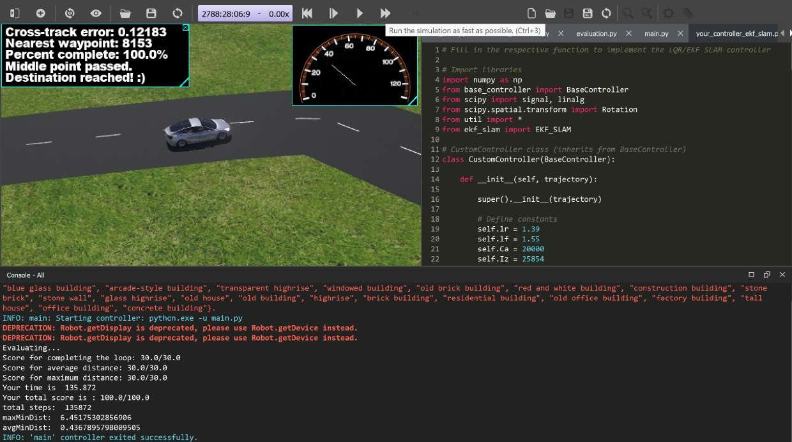
Adaptive control through a motor failure
The last project moved to a DJI Mavic 2 Pro. An LQR controller tracked a sequence of altitude commands. Then, partway through the flight, one motor loses half its thrust: the LQR drone falls, while my model reference adaptive controller, layered on the LQR baseline, keeps following the commands. Raising the loss, it still flew at 65%; at 66% it could no longer climb back to the last command, and at 70% it went down.
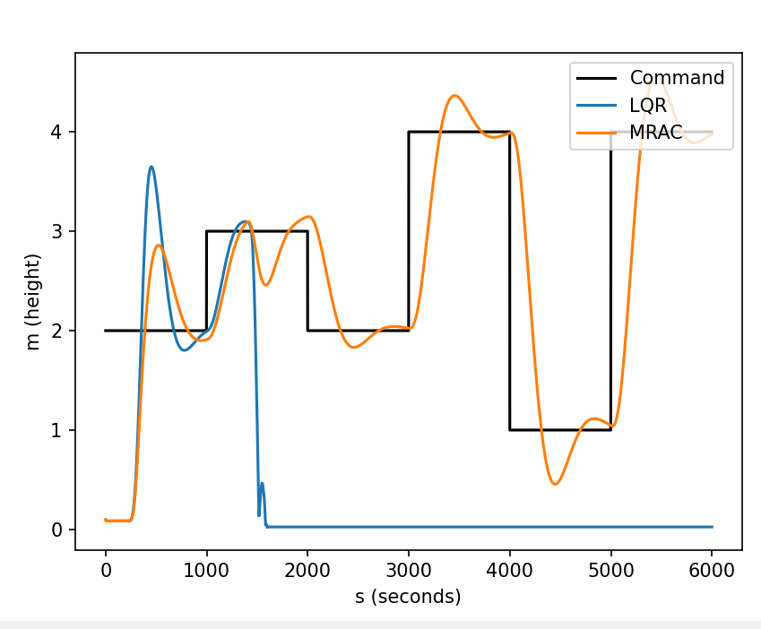
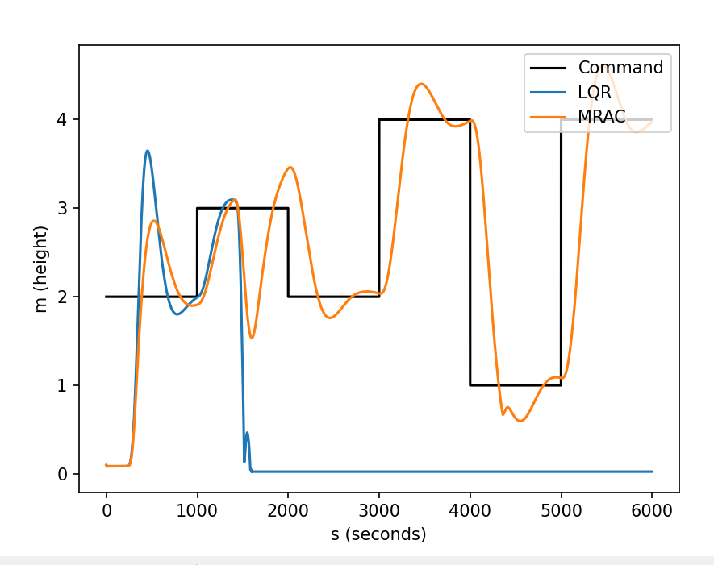
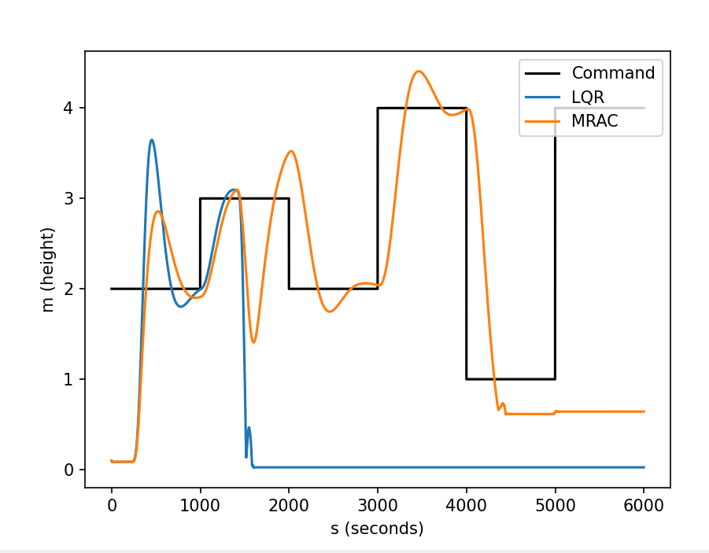